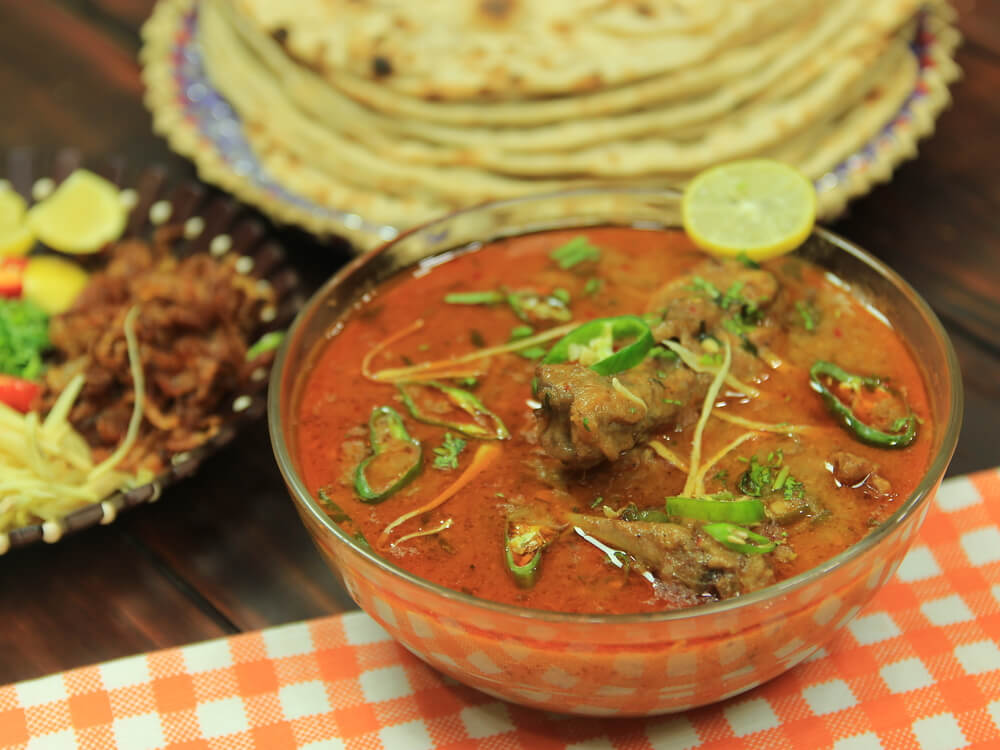

Make an easy one-pot Pakistani beef Nihari recipe with little preps of less than 30 minutes and fewer ingredients. I can tell you this will be best the curried beef stew you ever had!.
For making nihari you need a large pot and fry sliced onions on low until lightly golden. Add Boneless beef and bones with bone marrow. Fry beef on medium-high heat for 2-3 until color changes and it is slightly golden. Now add all the ingredients in the spice list and stir further for 1 minute. Add 4 cups of water enough to cover the beef completely. Bring it to boil then reduce heat to slow and cook for 4 hours or overnight (on very low heat). Make sure the lid is tightly closed. (If using instant pot or pressure cooker, cook time will be 45 minutes.) Once the meat is tender, check by breaking meat with a fork.
